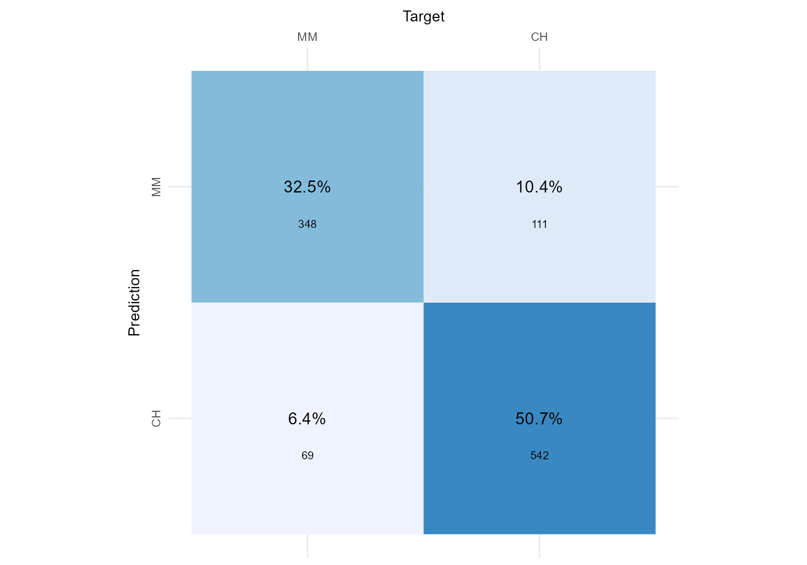
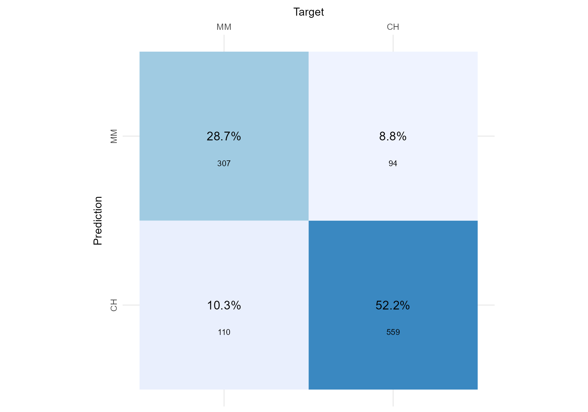
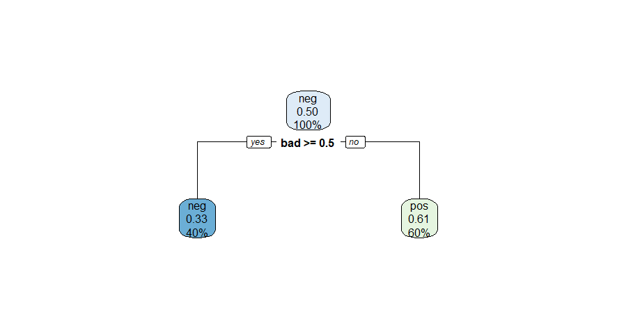
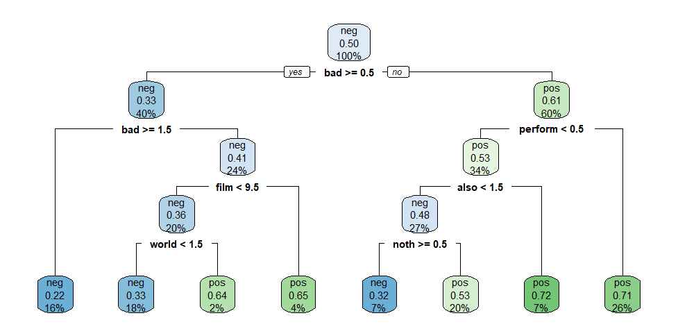

Summative Problem Set 03 | W11-W11+1
DS202 - Data Science for Social Scientists
Welcome to the third Summative Problem Set of DS202 (2022/23)! Download this file as an RMarkdown from Moodle.
Things to know before you start:
- Deadline: you have until 18 December 2022, 23:59 UK time to complete your solutions and submit via the DS202 Moodle (under ✍️ Assessment section).
- You will be granted a maximum of 100 points for the whole assignment. You will see how much each task is right next to the tasks’ names.
- This assessment is worth 20% of your final grade.
- Read the instructions carefully and make sure you follow them.
🎯 Exam-style questions
- The first three questions do not require writing any R code.
- These questions are worth 30 points and are also a taster of the style of the non-code questions you can expect from the January exam.
Q1. Linear Regression (5 points)
What metric does Ordinary Least Square (OLS) optimise? And how does OLS estimate regression coefficients?
your response here
split it into multiple lines if needed
✒️️ Marking Rubric: how you will be assessed
What a great answer! (5/5): Not only is the explanation correct, it is also very clear and concise (not vague, imprecise or unnecessarily verbose)
Correct (4/5): The answer was correct
Partially Correct (~3): Answer was not entirely correct or was confusing to read
Incorrect (0/5): Response was incorrect or missing
Q2. Confusion Matrices (10 points)
The two figures below shows the goodness-of-fit of two separate classifiers trained to predict the brand of Orange Juice sales per brand (ISLR2::OJ). Considering we do not have a preference for a particular brand, we want both to be identified correctly, which Classifier performed best?
Classifier 1 
Classifier 2 
your response here
split it into multiple lines if needed
✒️️ Marking Rubric: how you will be assessed
What a great answer! (10/10): Not only is the explanation correct, it is also very clear and concise (not vague, imprecise or unnecessarily verbose)
Correct (~7/10): The answer was correct
Partially Correct (~5/10): Answer was OK but it was a bit confusing to read
Partially Correct (~3/10): Answer was not entirely correct or was confusing to read
Incorrect (0/10): Response was incorrect or missing
Q3. Decision Trees (15 points)
For this question, we used the quanteda.textmodels::data_corpus_moviereviews corpus. This dataset consists of 2000 movie reviews and we have a target variable, called sentiment. The dataset is quite balanced, we have 1000 sentiment="yes" (indicating a positive sentiment towards the movie), the other 1000, sentiment="no", indicating a negative review.
We trained two separate decision trees, one with tree_depth=1 and another with tree_depth=4, on this dataset. As you probably know, the figures below depicts the fitted trees, and it contains useful information about how well the models fit the training data. Here is what we want from you: based on the information contained in these figures, calculate the F1-score of each model for the target variable sentiment="yes", explain how you calculated the scores and indicate which of the two models performed better.
Decision Tree Model 1 
Decision Tree Model 2 
your response here
split it into multiple lines if needed
✒️️ Marking Rubric: how you will be assessed
What a great answer! (15/15): Not only your answer was correct, it was very clear and engaging! You correctly explained how you calculated the F1-score and it was clear if and how one model was better than the other.
Correct (12/15) You correctly explained how you calculated the F1-score and it was clear if and how one model was better than the other.
Partially Correct (~8/15): You reached the correct F1 scores but your solution was a bit vague or imprecise.
Partially Correct (~5/15): Even though you reached the correct F1 scores, you did not explain how you calculated the scores satisfactorily.
Incorrect (0): Response was incorrect or missing
⚙️ Setup to coding questions
Your goal will be to conduct quantitative text analysis using unsupervised learning techniques on a selected dataset.
This time, you will be responsible for organising your own code! You will see all the instructions below together with detailed marking criteria, but you will be responsible for adding the chunks of code and chunks of text related to your submission at the bottom of this document.
The data
We will be using a dataset called zeroshot/twitter-financial-news-topic, a dataset of finance-related tweets. The dataset holds around 17k documents annotated with 20 labels that were determined manually by the authors of the dataset.
Your choice
Although this is not “big data”, some text mining algorithms might use quite a lot of RAM storage or can take quite some time to run. Thinking of that, we will you give you a choice of how big of a sample you want to work on for this problem set.
You can choose either:
Option 1) use the full dataset as is (df) or,
Option 2) select a subset of the data considering the following limitations:
- Select a few
manually_annotated_labelcategories and keep only tweets in your selected categories. - Your filtered dataset must have at least 4000 tweets.
🎯 Questions
Now here comes the actual coding questions. Read the instructions below (Q4-Q7) and then add your chunks of code/text at the bottom of this document.
(Note: Do not worry, this style of question will not feature in the final exam, as you will not have much time to write code.)
Q4. Pre-processing (10 points)
💭 It is often said that 80% of the effort and time put into a data science project is on cleaning and pre-processing data. Because this is a practical hands-on Machine Learning course, we cannot ignore that!
Write code that meets the requirements below:
- Import all libraries at the top of submission
- Read the dataset
- Filter the
manually_annotated_labelcategories (if Option 2) - Build a corpus of text
- Pre-process the tokens: remove stop words, remove punctuations, remove numbers. If you judge it necessary, remove more tokens.
- Build a document-frequency matrix.
Tip: check the documentation of quanteda’s ?tokens.
Pro-Tip: Take a look at ?dfm_trim to reduce the dimensionality of the document frequency matrix (it can potentially improve the clarity of analysis).
✒️️ Marking Rubric: how you will be assessed
Fantastic (10/10): Not only the solution ticks all the boxes, the code is well organised, there are no weird prints of warnings or unnecessary messages when importing libraries, and the candidate went an extra mile to check whether any extra filter should be applied when pre-processing the tokens.
Correct (~7/10): Ticks all the boxes.
Partial (~4/10): Solution was only partially correct, you forgot to consider a few requirements.
Incorrect (0/10): The code does not work as required.
Q5. Topic Modelling (30 points)
💭 I wonder if topics identified by topic modelling match the labels identified manually by the author of the dataset.
Write code that does the following:
- Run topic modelling with k topics, where k should match the same number of
manually_annotated_labelcategories in your dataset. In other words, if you are using the full dataset (Option 1), k=20. - Explain what each of the topics you found represent
- Give a meaningful name to each one of the topics you found
- Explain to what extent the topics you found match the labels that came with the original dataset (use tables, plots, etc.)
If you are having problems installing the topicmodels package, we will accept the use of clustering methods instead (k-means, for example).
✒️️ Marking Rubric: how you will be assessed
Fantastic (30/30): We can see that you went an extra mile to format your submission. This is a complex task, involving many steps but you made it look easy, clear and impressive. It should be published somewhere! Not only the solution ticks all the boxes, the code is well organised, the markdown is well formatted and the explanations are good yet concise.
Correct (~23/30): Solution ticks all the boxes.
Correct (~20/30): Solution was technically correctly but you could have put more care into communicating your results and explanations.
Partial (~15/30): Either the solution was partially correct or your code and explanations were a bit difficult to read (vague, overly verbose, complex, etc.)
Partial (~10/30): Either the solution was partially correct or your code and explanations were very difficult to read (vague, overly verbose, complex, etc.)
Incorrect (0/10): The code does not work as required.
Q6. Plots of topics (15 points)
Write code that does the following:
- Select one topic to highlight
- Create a word cloud highlighting the top words from the selected topic against the rest
- Create a plot of keyness for the selected topic against the rest
Tip: Check ?quanteda.textplots::textstat_keyness and ?quanteda.textplots::textplot_keyness
✒️️ Marking Rubric: how you will be assessed
Fantastic (15/15): Not only the solution ticks all the boxes, the code is well organised, and your plots and explanations told us an interesting story about the topic you selected.
Correct (~10/15): Ticks all the boxes.
Partial (~7/15): Either the solution was partially correct or your code and explanations were a bit difficult to read (vague, overly verbose, complex, etc.)
Partial (~3/15): Either the solution was partially correct or your code and explanations were very difficult to read (vague, overly verbose, complex, etc.)
Incorrect (0/15): The code does not work as required.
Q7. 2D visualisation of the dataset (15 points)
- Produce a 2D scatter plot of the dataset (however you want)
- Colour the dots according to the topics you found in Q5
- Explain if/how this visualisation improved your understanding of the data.
✒️️ Marking Rubric: how you will be assessed
Impressive! (15/15): It is not easy to create such an interesting 2D representation of text data but somehow you made it. It looks like a piece of art.
Correct (~10/15): Ticks all the boxes.
Partial (~7/15): Either the solution was partially correct or your code and explanations were a bit difficult to read (vague, overly verbose, complex, etc.)
Partial (~3/15): Either the solution was partially correct or your code and explanations were very difficult to read (vague, overly verbose, complex, etc.)
Incorrect (0/15): The code does not work as required.
Your submission starts here. Add everything after this point.
Organise your code as you find fit, aim for clarity in communication.